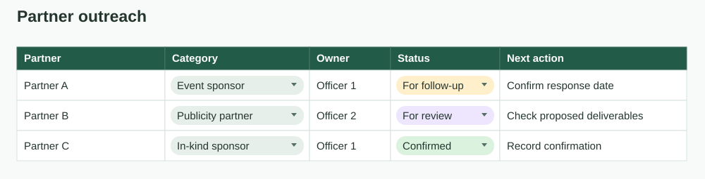
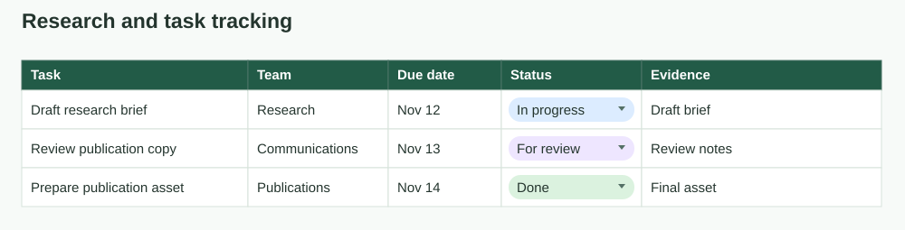
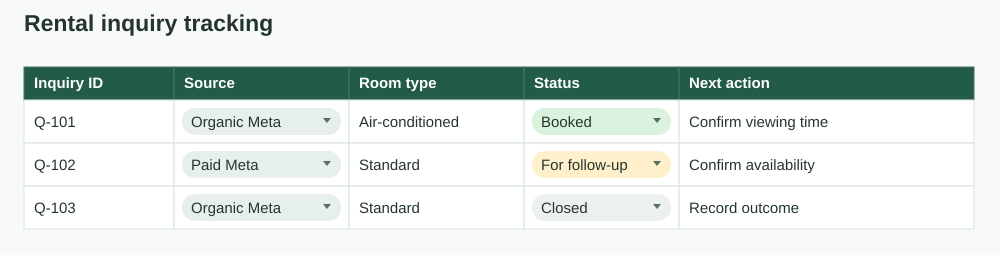

Check each source
Use a daily checklist to review product pages, site banners, social posts, newsletters, and SMS offers. Record each check, including days with no changes.
Prepared for Transcend
I’m Benjamin, a Computer Science student in the Philippines. I’ve tracked engagement in Excel, interpreted Meta Insights, and maintained sales and inquiry records. Here’s how I’d apply that experience to tracking CPAP offers and reporting changes.
Mabini Properties
JFINEX, DLSU-D
MID Construction Group
01 / Proposed workflow
A daily review of eight competitors and dealers, with a record of what changed and the evidence behind each flag.
Use a daily checklist to review product pages, site banners, social posts, newsletters, and SMS offers. Record each check, including days with no changes.
Record the seller, channel, SKU, advertised price, discount, code, bundle, and dates in Google Sheets. Save the source and a dated screenshot when available.
Check eligible offers against the current minimum advertised price (MAP) rules. Log possible exceptions for review and summarize new offers, price changes, and open cases.
02 / Prior work
An event promotion with an advertised price, published terms, and a measurable audience response.
Junior Financial Executives · DLSU-D · Published November 23, 2025
Source · Meta post-insights screenshot
Meta attributes 7,552 views to non-followers and 1,880 to followers. That makes discovery the clearest signal in this snapshot.
The plotted curve rises sharply in the first few days, then flattens. I would compare early responses and publishing context across similar posts before choosing a repeatable timing strategy.
To assess response beyond views, I would compare the post with link clicks and completed registrations if those figures were available.

The post places a ₱200 student offer, inclusions, event details, and registration links in front of a defined campus audience. The specific price and benefits give viewers something concrete to act on.
I contributed captions and design, led the event, and used trend analysis to support organic reach and engagement.
I published and led the post, with publication assistance from Mariel and caption assistance from Khen.
Open source post ↗
03 / Tracking and decisions
Two examples of the details I look for when reviewing campaign performance or following up on work in progress.
I handled room inquiries and reviewed the performance of a paid Meta ad for available rooms. Demand for the city-area properties stayed strong, so my takeaway was to limit paid promotion when organic inquiries were already sufficient and review the decision again if vacancies increased.
Our Google Sheets trackers organized sponsor follow-ups by owner and status, and publication work by deadline, committee, status, and source link. The same structure would help me see what has been checked and what needs follow-up in an offer tracker.
04 / Spreadsheet case study
The partner and task examples draw on JFINEX team workbooks. The inquiry example shows how similar fields can support rental follow-up.

The sponsor workbook grouped organizations by category and tracked ownership and follow-up status. For Transcend, I would use that pattern to assign each seller and log checks that need follow-up.

The workload workbook included event status, individual task deadlines and supporting links. A similar view would let me trace a flagged offer to its evidence and see who needs to act.

This practice model uses a unique inquiry ID and standard source and status fields. Those fields make it easier to compare paid and organic inquiries and spot records that need action.
Contact
Competitive Insights Analyst application · Philippines
Email Benjamin ↗ Download résumé ↓